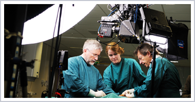
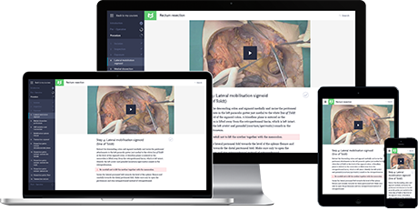

Incision offers surgeons state-of-the-art information of surgical skills.
Demand for well-trained surgeons keeps on growing because of increasing population and higher standards for health care quality. INCISION combines the best medical content on operating techniques with the latest technologies such as 3D video and an interactive E-Learning environment. We are building a platform to share surgical knowledge and train residents with improved efficiency and quality of care. Surgeons will be able to share knowledge without the restrictions of distance, time or number of students.
How it started.
To share the knowledge and skills he acquired during his 30 years long career as a surgeon Prof. Theo Wiggers founded INCISION and made the first surgical instruction video in 3D. Supported by health entrepreneur Jaap Maljers, Erik-Jan Vlieger and team of medical doctors, INCISION is committed to the advancement of surgical education worldwide.

Theo Wiggers
MD PhD FRCS
Professor Wiggers has been a surgeon and trainer in surgical oncology for almost 30 years. Today he is still appointed at the University Medical Center Groningen and holds several advisory and supervisory board positions for healthcare organizations with special attention to quality control.
Jaap Maljers
MD MBA
Jaap Maljers has been active as a healthcare entrepreneur in the Netherlands for more than 20 years. He is founder and owner of various healthcare organizations such as a leading consultancy firm, technology providers and health clinics.
Erik-Jan Vlieger
MD MSc PhD
Erik-Jan Vlieger obtained his PhD in medicine and his PhD in physics at the University of Amsterdam. As the former head of a lead health consultancy firm he specializes in the integration of healthcare and science.
Knowledge platform.
Our e-learning modules create a personalized, user friendly learning environment and include multi-layered medical content (operating guidelines, references, hazards) and interactive questionnaires. By adapting to individual learning styles we optimize training efficiency and make learning more enjoyable. E-learning will be done independently but can also be done in a group of residents to maximize sharing of insights.
